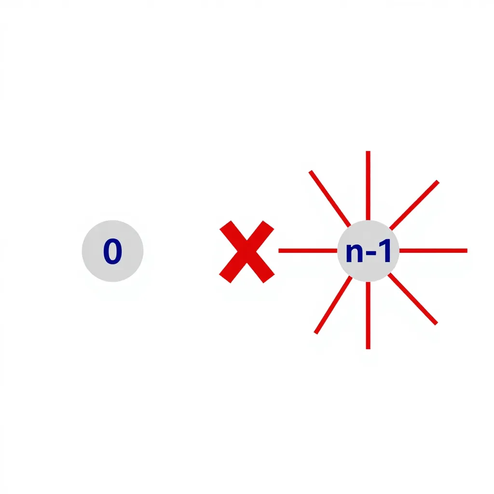
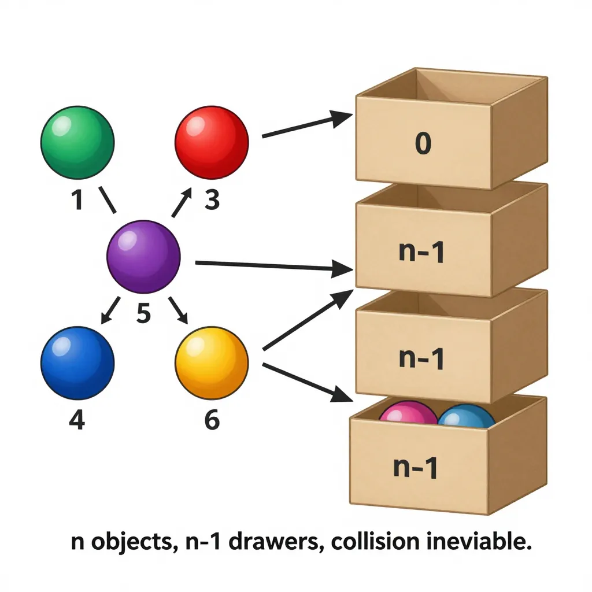

2 Chapitre 2 : L’assemblée et les tiroirs
2.1 Un théorème de soirée
Dans le chapitre précédent, les Bourbaki nous ont montré qu’une simple question de poignées de main révèle des structures cachées dans un graphe. La notion de degré — combien de connexions possède chaque sommet — s’est avérée d’une puissance inattendue.
Posons maintenant une question encore plus élémentaire.
Vous êtes dans une assemblée de n personnes. Chacun connaît un certain nombre d’autres personnes présentes. Peut-il arriver que tout le monde connaisse un nombre différent de personnes ? Autrement dit : dans une assemblée de n personnes, est-il vrai qu’au moins deux personnes ont le même nombre de connaissances ?
La réponse est oui — toujours, dans n’importe quelle assemblée, quels que soient les liens entre les personnes. Et la preuve tient en quelques lignes.
2.3 L’incompatibilité des extrêmes
Quels sont les degrés possibles ? Dans un graphe à n sommets, chaque sommet peut avoir entre 0 et n − 1 connexions. Le degré minimal est 0 (la personne ne connaît personne), et le degré maximal est n − 1 (la personne connaît tout le monde).
Cela fait n valeurs possibles : 0, 1, 2, …, n − 1. Il y a n sommets et n valeurs. À première vue, on pourrait attribuer un degré différent à chaque sommet — un par valeur.
Mais voici le piège.
Supposons qu’un sommet ait le degré n − 1 — appelons-le Max. Max est relié à tous les autres sommets. Chaque personne dans l’assemblée connaît au moins Max. Personne ne peut donc avoir le degré 0.
Réciproquement, si quelqu’un a le degré 0 — appelons-le Min — Min ne connaît personne. Personne ne peut alors prétendre connaître tout le monde, car il faudrait connaître Min, ce qui est impossible puisque Min ne connaît personne. (La connaissance est réciproque dans notre modèle : si je vous connais, vous me connaissez.)

Imaginez une salle de classe. Si un élève a échangé son numéro de téléphone avec tous les autres élèves (degré n − 1), alors chaque élève possède au moins un numéro — celui de cet élève sociable. Personne ne peut prétendre n’avoir aucun numéro (degré 0).
Les extrêmes s’excluent mutuellement. Le sommet le plus connecté empêche l’existence d’un sommet complètement isolé, et vice versa.
Conclusion : les degrés 0 et n − 1 ne peuvent jamais apparaître simultanément dans le même graphe. Il faut choisir l’un ou l’autre — mais jamais les deux.
2.4 Le principe des tiroirs
Nous avons maintenant tous les ingrédients.
Il y a n personnes (les « objets »). Les valeurs de degré possibles sont les « tiroirs ». Sans la restriction précédente, il y aurait n tiroirs : {0, 1, 2, …, n − 1}. Mais puisque 0 et n − 1 ne peuvent pas coexister, le nombre réel de tiroirs disponibles est au plus n − 1 :
- Soit les degrés appartiennent à {0, 1, 2, …, n − 2} (si personne ne connaît tout le monde)
- Soit ils appartiennent à {1, 2, …, n − 1} (si personne n’est complètement isolé)
Dans les deux cas : n objets, n − 1 tiroirs.
Si l’on range n objets dans n − 1 tiroirs, alors au moins un tiroir contient deux objets ou plus.
C’est l’un des principes les plus simples et les plus puissants de toute la combinatoire. Il ne dit rien sur quel tiroir est surchargé, ni quels objets le partagent — il dit seulement que la collision est inévitable.
En allemand, on l’appelle le Schubfachprinzip — littéralement « principe des casiers ». En anglais, le pigeonhole principle : si n pigeons se posent dans n − 1 nids, deux pigeons partagent le même nid.
Appliqué à notre problème : n personnes, au plus n − 1 degrés possibles. Par le principe des tiroirs, au moins deux personnes ont le même degré — c’est-à-dire le même nombre de connaissances.

Et voilà. En quatre lignes de raisonnement — modélisation, incompatibilité des extrêmes, comptage des tiroirs, conclusion — le problème est résolu. La preuve est si courte qu’elle peut sembler trompeuse. Mais c’est justement sa beauté : elle exploite une contrainte structurelle que personne ne voit au premier regard.
2.5 Le fil rouge : les degrés contraignent tout
Arrêtons-nous un instant pour relier ce résultat au chapitre précédent.
Chez les Bourbaki, la question était : quand toutes les réponses sont différentes, que peut-on en déduire ? La réponse : le couple hôte serre exactement n mains. Le fait que les degrés couvrent toute la gamme {0, 1, …, 2n} était une hypothèse — et elle suffisait à déterminer la structure entière du graphe.
Ici, la question est inverse : est-il seulement possible que tous les degrés soient différents ? La réponse est non — pas dans un graphe simple. La contrainte d’incompatibilité entre 0 et n − 1 crée un manque, et ce manque force une collision.
Chapitre 1 et chapitre 2 racontent la même histoire sous deux angles différents :
- Bourbaki : si les degrés couvrent toute la gamme, la structure est entièrement déterminée (le couple hôte a degré n)
- L’assemblée : les degrés ne peuvent pas tous être différents dans un graphe simple (collision inévitable)
Dans les deux cas, c’est la séquence de degrés qui contient l’information clé. Le local (combien de connexions a chaque sommet) contraint le global (la structure du réseau tout entier). Ce principe est l’une des idées fondatrices de la théorie des graphes.
2.6 Ce que nous avons appris
| Concept | Ce qu’il faut retenir |
|---|---|
| Le graphe simple | Pas de boucles, pas d’arêtes multiples — le modèle naturel des relations sociales |
| L’incompatibilité 0 / n−1 | Si quelqu’un connaît tout le monde, personne ne peut être complètement isolé — et réciproquement |
| Le principe des tiroirs | n objets dans n−1 cases = collision garantie. Simple, puissant, universel |
| Degrés et structure | La séquence de degrés d’un graphe est soumise à des contraintes cachées qui en limitent la liberté |
2.7 Vers une loi universelle
Les deux premiers chapitres nous ont montré que les degrés — cette simple mesure du nombre de connexions de chaque sommet — recèlent une puissance insoupçonnée. Ils déterminent la structure chez Bourbaki, ils forcent des collisions dans l’assemblée.
Mais ces résultats dépendaient de conditions particulières. Chez Bourbaki, les réponses devaient être toutes différentes. Dans l’assemblée, on exploitait l’incompatibilité entre le degré 0 et le degré n − 1.
Existe-t-il une propriété des degrés qui soit vraie toujours — pour n’importe quel graphe, sans aucune condition ? Un résultat si fondamental qu’il ne dépend de rien d’autre que la définition même de ce qu’est un graphe ? La réponse est oui — et ce résultat tient en une seule ligne. Il va transformer notre compréhension de ce que les degrés peuvent nous apprendre.